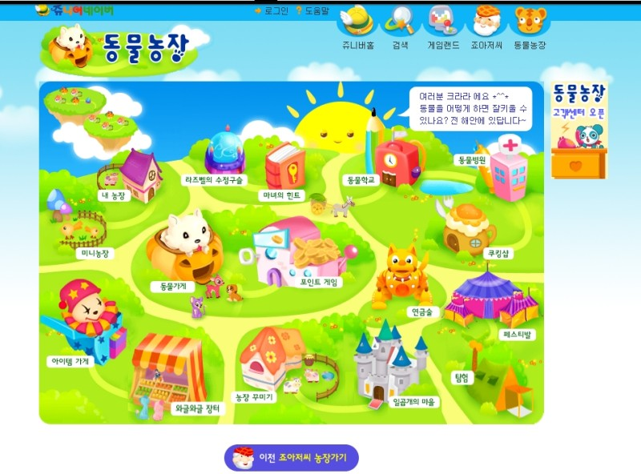

· 검사결과 ·
나와 어울리는 플래시 게임은
동물농장
(ESFJ)

활발한 성격을 가진 당신, 언제나 주위에 사람이 모이는군요? 주위 사람들에게 관심이 많은 당신에게는 여러 사람들을 행복하게 해줄 수 있는 ‘동물농장’ 게임이 딱 어울리네요!
타인을 헤아릴 줄 아는 당신은 본인의 농장뿐만 아니라, 주변 친구들의 농장에도 항상 관심을 가져요. 동물병원 입원실에 친구의 동물이 입원해 있다면 주저없이 위로의 선물을 보내줄 당신!
꽤나 철저한 계획을 세우기 때문에 농장을 꾸밀 때에도 동물과 훈장, 아이템을 어떻게 배치할지 항상 염두에 두고 꾸미진 않으신가요?
각 동물마다 다르게 주어진 퀘스트를 완료할 때, 당신은 한 동물에 치우치지 않고 여러 동물을 골고루 성장시킬 것 같아요.
퀘스트 도중 갑작스럽게 친구가 불러도 계획이 틀어졌다는 것에 꺼려하긴 하지만, 막상 잘 가고 즐거워하는 거 다 알고 있답니다!
타인을 헤아릴 줄 아는 당신은 본인의 농장뿐만 아니라, 주변 친구들의 농장에도 항상 관심을 가져요. 동물병원 입원실에 친구의 동물이 입원해 있다면 주저없이 위로의 선물을 보내줄 당신!
꽤나 철저한 계획을 세우기 때문에 농장을 꾸밀 때에도 동물과 훈장, 아이템을 어떻게 배치할지 항상 염두에 두고 꾸미진 않으신가요?
각 동물마다 다르게 주어진 퀘스트를 완료할 때, 당신은 한 동물에 치우치지 않고 여러 동물을 골고루 성장시킬 것 같아요.
퀘스트 도중 갑작스럽게 친구가 불러도 계획이 틀어졌다는 것에 꺼려하긴 하지만, 막상 잘 가고 즐거워하는 거 다 알고 있답니다!
검사자 총
73,591명 중
나와 같은 유형을 가진 사람은
2,346명 입니다.